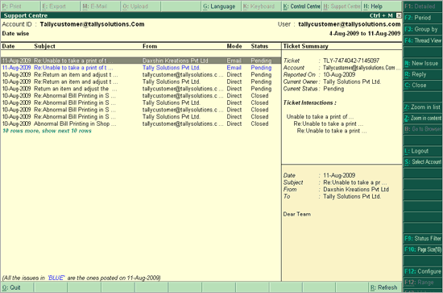

When you login to Support Centre, by default, the Support Centre screen will list the queries raised for the last 7 days. A sample screen is displayed.

Note: The Support Centre screen for a newly activated Shoper 9 license will be blank.
The Support Centre screen displays the following information:
Query List: The default setting of the page size to list the queries is 10. Click on the link 'There are 10 rows more, show next 10 rows' to view the next 10 queries. Once the next 10 queries are displayed, the option '10 more, show previous 10 rows' gets displayed on top of the list.
Note: Issues posted on the current date are in Blue
Ticket Summary: The Ticket Summary column displays:
Ticket: displays the ticket number assigned to the query
Account ID: displays the Account ID of the user
Reported On: displays date
Current Owner: displays the current owner of the query
Current Status: displays the current status (Pending/ Closed) of the query
Ticket Interactions: displays the subject of the query
The second part of the Ticket Summary displays:
The Date of the query
The Subject of the query
The query received From name
The query sent To name
The description of the query
Additionally, Tally.ERP 9 provides a button bar to customise the information on a Support Centre screen as per your requirement. The following table explains each button and its functionality.
|
Button |
Functionality |
|
F1: Detailed/ Condensed |
To view the queries in Detailed/ Condensed mode. This button toggles between Detailed and Condensed view. |
|
F2: Period |
To change the period for which you want to view the query list |
|
F3: Group by |
To display the query list based on the Groups |
|
F4: Thread View/ List View |
To display the queries in Thread/List View. This button toggles between Thread View and List View. |
|
N: New Issue |
To post a new issue |
|
R: Reply |
|
|
C: Close |
|
|
Z: Zoom in list/ Zoom out List |
To display the query list in zoom in/ zoom out mode. This button toggles between Zoom in list and Zoom out List. |
|
Z: Zoom in content/ Zoom out content |
To display any query content in zoom in/ zoom out mode. This button toggles between Zoom in content and Zoom out content. |
|
B: Go to Browser |
To preview any query/ issue in a browser |
|
L: Login/Logout |
To Login/Logout |
|
S: Select Account |
To switch to another Account ID, if the User ID (Tally.NET ID) is configured with more than one Account ID |
|
F8: Site Filter |
To display the query list based on Sites |
|
F9: Status Filter |
To display the query list based on Status |
|
F10: Page Size (10) |
To set the Page size, i.e., the number of queries to be listed at a time |
|
F12: Configure |
To set the configuration as per requirement |
|
R: Refresh |
To refresh the query list |
|
Q: Quit |
To quit from the active screen |